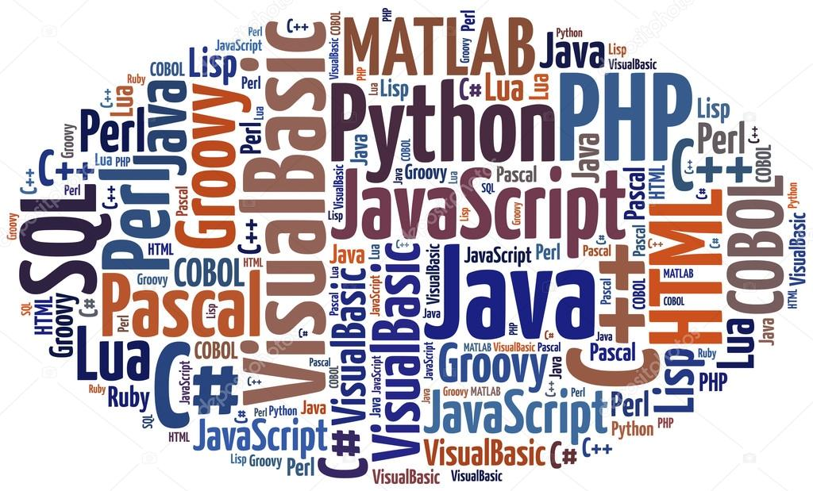

Este artigo foi feito analisando artigos e obras literárias com o objetivo de pesquisar como
a programação poderia ser utilizada para a aprendizagem de biologia para o ensino médio
utilizando o Python, criando um quiz com dificuldades variáveis contendo questões de vestibular e
concursos a fim de tornar o ensino de biologia no ensino médio mais dinâmico e interessante,
chegando a conclusão que a programação com Python poderia sim ser utilizada para o estudo de
biologia no ensino médio com jogos educacionais.
O que é Programação?
Programação são linguagens feitas para que nós possamos nos comunicarmos com o computador para que ele nos "responda" e faça os nossos pedidos.
Na verdade, as linguagens de programação que nós vemos hoje como por exemplo print('Hello World!') não foi sempre assim, a primeira linguagem real de programação criada que é a interpretada pelo computador até hoje, é o código binário, que é resumidamente uma sucessão de zeros (0) e uns (1) que em ordens especificas, geram uma letra, palavra e os comandos que nós conhecemos
Mas então todos os Códigos são 010101010?
Não, o código que o computador realmente entende é essa sequencia de 01010, porém, imagina ter que fazer sites e programas com sequencias de 010101, isso seria impossível, aí que vieram as linguagens de programação começando pela FORTRAN.
Então com o Surgimento de Linguagens o Computador entendeu a nossa lingua?
É um pouco mais complexo que isso na verdade. O computador nunca mudou a sua linguagem, ele sempre entendeu as mesmas sequências de 01, porém agora, NÓS temos como nos comunicar com ele. "Como Assim?" vocês devem estar se perguntando, mas é fácil fácil de entender.
De forma simples de se compreender, imagina que você fala pro computador: "mostre isso na minha tela: Olá Mundo", o computador não entenderia essas palavras por conta de entender somente os 01. Mas então você decide usar uma linguagem de programação e escreve por exemplo "print('Olá Mundo!')" e como uma passe de mágica, aparece em um console a sua frase pedida. O que aconteceu foi que o seu programa onde você escreveu transformou a linha de código em binário (01) e assim, o computador entendeu que era pra mostrar essa frase na sua tela e o fez.

Agora que vocês já estão situados sobre o que é programação, vamos falar sobre:
Qual a nossa proposta com isso?
Primeiramente
Todos nós sabemos que hoje em dia, as crianças e principalmente os jovens adoram jogar videogame e jogos que cativem a sua criatividade ou que os recompensem de alguma forma.
Pensando nisso, por que nós não damos isso a eles ou invés de tirar? Diversas escolas abominam o uso de tecnologicos em classe e ainda punem os alunos que fazem isso com advertência ou confiscando o aparelho eletrônico do mesmo. Mas hoje em dia, a tecnologia está inclusa em toda a nossa vida, na comunicação (telefones, whatsapp...), em casa (geladeira, microondas, ar condicionado...), locomoção (carros precisam de bateria e atualmente, estão criando até mesmo carros que utilizam apenas a energia para se locomover) e isso não poderia ser diferente nas escolas.
De acordo com Savi e Ubricht (2008), jovens que jogam videogames se tornam experts naquilo que eles estão jogando. O que indica que, se nós tivessemos jogos das matérias que nós estamos aprendendo nas escolas, nossos alunos aprenderiam melhor o conteúdo, além de poderem utilizar os jogos não só como metódo de aprendizagem, mas também como lazer...
Segundamente
Programação já existe desde miados de 1950 e era uma coisa quase que "obscura" entre as pessoas, ninguém queria saber de programação de tecnologia naquela época, mas hoje em dia, com o surgimento de maquinas potentes, a programação começou a receber muito mais atenção...
De acordo com a Alura (2020) durante a pandemia, nós tivemos um aumento de mais de 90% sobre a demanda de programadores na área serviçal que é um número ENORME, mas não só isso, as pessoas que tem uma capacidade ampliada de lógica e gostam de tecnologia seriam sortudas, por que em média um programado sênior recebe R$:10.000,00 mensalmente, que é cerca de 8x maior que um salário minimo brasileiro
Se os alunos que tivessem interesse na programação, tivessem como aprender sobre programação dentro das escolas em conjunto com ensinos de matérias lógicas, mais alunos realmente se interessariam em ir na escola e deixariam de ir por pura obrigação.